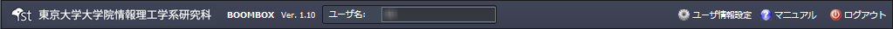
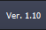
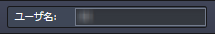
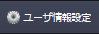
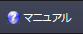
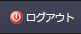

SecretFilesマニュアル
3. SecretFilesサービス(解説編)
3.2 各ペインの説明
3.2.1 トップバー

タイトル: 本サービスの名称です。
バージョン: 本サービスは常に改良を重ねています。ログイン時点での最新版のバージョンを表示しています。

ユーザ名: ログイン時に入力したユーザ名を表示します。

「ユーザ情報設定」ボタン

パスワードの変更や登録した利用者情報の変更を行なうために表示するウィンドウです。
「マニュアル」ボタン

このマニュアルを表示するときにクリックします。
マニュアル画面は、本サービスのウインドウ(ブラウザの設定によってはタブ)とは別に開きますので、相互に参照しながら作業を進めることができます。
「ログアウト」ボタン

すべての作業を終了し、本サービスを終了するときにクリックします。
サーバでは、これまでの作業の状態を記録していますので、次のログイン時には、ログアウト時の状態を再現します。